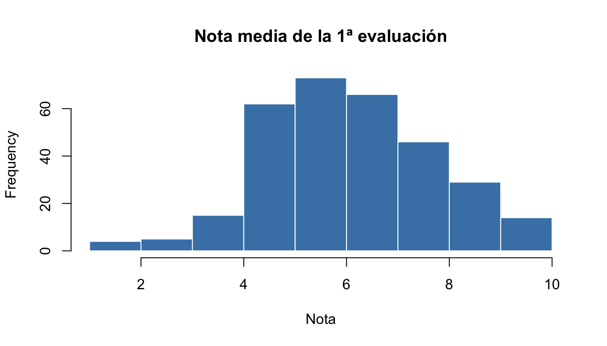

install.packages("janitor") # instalar: una vez (en la consola, no en el script)
library(janitor) # cargar: en cada sesión (al principio del script)Sesión 1. Primeros pasos con R
Curso de iniciación a R. Departamento de Ciencias de la Educación, Universidad de Alcalá
| Bloque | Contenido | Tiempo aprox. |
|---|---|---|
| 1.1 | RStudio, proyectos y renv |
25 min |
| 1.2 | Objetos, tipos y vectores | 35 min |
| 1.3 | Factores, tablas de datos y listas | 20 min |
| 1.4 | Un poco de programación: funciones, condiciones y bucles | 15 min |
| Ejercicio 1 y puesta en común | 25 min | |
| Descanso | 15 min | |
| 1.5 | Importar datos | 20 min |
| 1.6 | Limpiar los datos de una encuesta | 15 min |
| 1.7 | Describir los datos | 15 min |
| 1.8 | Informes reproducibles con Quarto | 30 min |
| Ejercicio 2 y puesta en común | 25 min |
1.1. RStudio, proyectos y renv
TipObjetivo
Orientarte en RStudio, configurarlo para trabajar de forma reproducible, entender por qué trabajamos siempre dentro de un proyecto y ejecutar tus primeras instrucciones.
R y RStudio
R es a la vez un programa de análisis de datos y un lenguaje de programación. Es libre y gratuito, y lo usan millones de investigadores. RStudio es el programa desde el que usamos R: un entorno de desarrollo (IDE) que organiza en una sola ventana el código, los resultados, los datos y la ayuda.
R se puede usar de dos formas, y en este curso usaremos las dos:
- Escribiendo código: queda guardado, se puede repetir y compartir. Es la forma reproducible.
- Usando los menús y paneles de RStudio: cómodos para explorar y para tareas puntuales. Muchos de ellos, además, escriben por nosotros el código equivalente.
A lo largo del curso, los recuadros “También con RStudio” indican cómo hacer con el ratón lo que estamos haciendo con código.
Las cuatro zonas de RStudio
| Zona | Para qué sirve |
|---|---|
| Editor (arriba a la izquierda) | Donde escribimos el código que queremos guardar: scripts (.R) y documentos Quarto (.qmd). También muestra las tablas de datos con View(). |
| Consola (abajo a la izquierda) | Donde R ejecuta las instrucciones. Lo que escribes aquí directamente no se guarda. |
| Entorno (arriba a la derecha) | Pestaña Environment: los objetos que has creado (datos, variables…). Pestaña History: las instrucciones ejecutadas. |
| Archivos / Gráficos / Paquetes / Ayuda (abajo a la derecha) | Explorador de ficheros, gráficos, paquetes instalados y ayuda de las funciones. |
Escribe el código en el editor y ejecútalo desde ahí con Ctrl+EnterCtrl+Enter (en Mac, Cmd+EnterCmd+Enter): se ejecuta la línea en la que está el cursor, o lo que tengas seleccionado. Así queda guardado y puedes repetir el análisis cuando quieras.
Tres ayudas que conviene conocer desde el principio:
- TabTab autocompleta nombres de funciones, de objetos, de argumentos y de ficheros (también dentro de unas comillas).
- En la consola, la flecha arriba recupera las instrucciones anteriores. Todas están en la pestaña History.
- Si la consola muestra un
+en lugar de>, R está esperando a que termines la instrucción: normalmente falta cerrar un paréntesis o unas comillas. Pulsa EscEsc y revisa la línea.
Configurar RStudio para trabajar de forma reproducible
Por defecto, RStudio guarda al cerrar todos los objetos de la sesión en un fichero .RData y los vuelve a cargar al abrir. Parece cómodo, pero es una fuente de errores: acabas dependiendo de objetos que no sabes cómo se crearon. Es mejor que todo lo que necesites salga de tu código. Cámbialo una sola vez:
Tools > Global Options > General:
- Desmarca Restore .RData into workspace at startup.
- En Save workspace to .RData on exit, elige Never.
Proyectos: una carpeta para cada análisis
Un proyecto de RStudio (fichero .Rproj) es una carpeta que contiene todo lo relacionado con un análisis: datos, scripts, informes, resultados. Al abrir el proyecto, R “se sitúa” en esa carpeta (el directorio de trabajo, que aparece en la barra de título de la consola), de modo que podemos escribir rutas cortas que funcionan en cualquier ordenador:
"datos/encuesta_bruta.xlsx" # ruta relativa: funciona en cualquier ordenador
"C:/Users/ana/Escritorio/curso/datos/encuesta_bruta.xlsx" # ruta absoluta: solo funciona en el ordenador de AnaEste curso es, en sí mismo, un proyecto: ábrelo siempre con doble clic en curso_R_UAH.Rproj. El nombre del proyecto abierto aparece arriba a la derecha de RStudio; desde ese menú se cambia de un proyecto a otro.
NotaTambién con RStudio
Para crear un proyecto nuevo: File > New Project > New Directory > New Project. Lo haremos al final de la sesión 2.
Paquetes
R se amplía con paquetes (hay más de 20.000). Un paquete se instala una sola vez y se carga cada vez que abrimos R:
Si intentas usar una función de un paquete que no has cargado, R responde could not find function. También puedes usar una función sin cargar el paquete escribiendo paquete::función(), por ejemplo janitor::clean_names().
NotaTambién con RStudio
En la pestaña Packages (panel inferior derecho), el botón Install abre un cuadro en el que basta escribir el nombre del paquete. La misma pestaña muestra los paquetes instalados; los que tienen la casilla marcada están cargados.
renv: cada proyecto con sus propios paquetes
Un problema muy habitual es que un análisis que funcionaba hace un año deja de funcionar porque se ha actualizado un paquete. O que a un compañero no le funciona tu código porque tiene otras versiones instaladas.
El paquete renv resuelve esto dando a cada proyecto su propia biblioteca de paquetes y anotando las versiones exactas en un fichero llamado renv.lock:
flowchart LR A["renv.lock<br/>(lista de paquetes<br/>y versiones)"] -- "renv::restore()" --> B["Biblioteca<br/>del proyecto"] B -- "renv::snapshot()" --> A
| Instrucción | Cuándo se usa |
|---|---|
renv::init() |
Una vez, al crear un proyecto nuevo. |
renv::restore() |
Al abrir por primera vez un proyecto que ya tiene renv.lock (como este curso): instala exactamente lo que dice el fichero. |
install.packages("paquete") |
Para añadir un paquete nuevo al proyecto (o el botón Install). |
renv::snapshot() |
Después de instalar algo nuevo: actualiza renv.lock. |
renv::status() |
Para comprobar si la biblioteca y renv.lock coinciden. |
En la preparación del curso ya ejecutaste renv::restore(). En la sesión 2 crearás tu propio proyecto con renv.
Tu primera línea de código
cat("¡Hola, mundo!")¡Hola, mundo!¿Qué acaba de pasar?
cat()es una función: una instrucción que hace algo (en este caso, mostrar un texto).- Lo que va entre paréntesis son los argumentos: la información que necesita la función.
- R ejecutó la instrucción y mostró el resultado.
R es, para empezar, una calculadora:
(6.5 + 8 + 7.2) / 3[1] 7.233333sqrt(16)[1] 42^3[1] 8round(7.4666, 1)[1] 7.5La función round() tiene dos argumentos: el número y los decimales. Podemos escribir sus nombres para que el código sea más claro; si los escribimos, el orden da igual:
round(x = 7.4666, digits = 1)[1] 7.5round(digits = 1, x = 7.4666)[1] 7.5Todo lo que va detrás de # es un comentario: R lo ignora. Úsalos para explicar el porqué de tu código.
# Media de las tres evaluaciones
(6.5 + 8 + 7.2) / 3[1] 7.233333La ayuda
Cada función tiene una página de ayuda con sus argumentos, sus valores por defecto y ejemplos al final:
?round
NotaTambién con RStudio
Sitúa el cursor sobre el nombre de una función y pulsa F1F1, o busca en la pestaña Help. Dentro de los paréntesis de una función, TabTab muestra la lista de sus argumentos.
Mensajes, avisos y errores
R responde en rojo con tres tipos de mensajes, y solo uno de ellos significa que algo ha fallado:
| Tipo | Ejemplo | Qué hacer |
|---|---|---|
| Mensaje (message) | Attaching core tidyverse packages |
Nada: es informativo. |
| Aviso (warning) | Warning: NAs introduced by coercion |
La instrucción se ha ejecutado, pero conviene entender el aviso: puede que el resultado no sea el que esperas. |
| Error (error) | Error: object 'notas' not found |
La instrucción no se ha ejecutado. Lee el mensaje: casi siempre dice qué pasa. |
1.2. Objetos, tipos y vectores
TipObjetivo
Guardar información en objetos, distinguir los tipos de datos básicos y trabajar con vectores (una columna de datos).
Objetos: los contenedores de información
En R guardamos la información en objetos con el operador de asignación <- (atajo de teclado: Alt+-Alt+-). La analogía con una hoja de cálculo es directa:
# En Excel sería: A1 = 7.5
nota_ana <- 7.5
# En Excel sería: B1 = A1 + 1
nota_con_trabajo <- nota_ana + 1
nota_con_trabajo[1] 8.5Al crear un objeto, R no muestra nada; para verlo, escribimos su nombre. Los objetos aparecen en la pestaña Environment.
Se llaman variables porque su contenido puede cambiar:
alumnos_matriculados <- 24
alumnos_matriculados <- alumnos_matriculados + 1 # llega una alumna nueva
alumnos_matriculados[1] 25Reglas para los nombres:
- Pueden contener letras, números,
.y_, pero no pueden empezar por número. - R distingue mayúsculas de minúsculas:
notayNotason objetos distintos. - Mejor sin tildes, eñes ni espacios:
puntuacion_ansiedad, nopuntuación ansiedad.
Tipos de datos
En nuestros estudios manejamos información de distinta naturaleza, y R necesita saber de qué tipo es cada una:
| Tipo en R | Qué guarda | Ejemplos |
|---|---|---|
numeric (double / integer) |
Números | edad, nota, puntuación en una escala |
character |
Texto (entre comillas) | nombre del centro, respuesta abierta |
logical |
Verdadero/falso: TRUE / FALSE |
¿ha aprobado?, ¿tiene NEE? |
edad <- 14
centro <- "IES Cervantes"
tiene_nee <- FALSE
class(edad)[1] "numeric"class(centro)[1] "character"class(tiene_nee)[1] "logical"Con el texto también se puede operar. Por ejemplo, paste() une textos:
paste("Centro:", centro)[1] "Centro: IES Cervantes"paste0("E", 1:3) # paste0 no deja espacio entre las partes[1] "E1" "E2" "E3"toupper(centro) # en mayúsculas[1] "IES CERVANTES"El problema de mezclar tipos
Uno de los errores más frecuentes al empezar: un número guardado como texto.
edad_texto <- "14" # entre comillas, así que es texto
# edad_texto + 1La solución es convertir el tipo con las funciones as.*():
as.numeric(edad_texto) + 1[1] 15Si la conversión no es posible, R devuelve NA y nos avisa:
as.numeric(c("14", "15", "catorce"))[1] 14 15 NAVectores: una columna de datos
Un vector es un conjunto de valores del mismo tipo. Es como una columna de una hoja de cálculo. Se crean con la función c() (de combinar):
notas <- c(6.5, 8.0, 4.5, 9.2, 5.0, 3.8, 7.1)
alumnos <- c("Ana", "Luis", "Marta", "Jorge", "Sara", "Iván", "Lucía")
length(notas)[1] 7Hay atajos para crear vectores habituales:
1:10 # del 1 al 10 [1] 1 2 3 4 5 6 7 8 9 10seq(0, 100, by = 25) # de 0 a 100, de 25 en 25[1] 0 25 50 75 100rep(c("pre", "post"), times = 3)[1] "pre" "post" "pre" "post" "pre" "post"Si mezclamos tipos en c(), R convierte todo al tipo más general (normalmente, texto):
c(1, "dos", 3)[1] "1" "dos" "3" Acceder a los elementos
Los elementos se seleccionan con corchetes []. En R, el primer elemento es el 1:
notas[1] # la primera[1] 6.5notas[c(1, 3)] # la primera y la tercera[1] 6.5 4.5notas[2:4] # de la segunda a la cuarta[1] 8.0 4.5 9.2notas[-1] # todas menos la primera[1] 8.0 4.5 9.2 5.0 3.8 7.1alumnos[length(alumnos)] # la última[1] "Lucía"También se pueden modificar elementos concretos:
notas_corregidas <- notas
notas_corregidas[3] <- 5.0 # tras la revisión del examen
notas_corregidas[1] 6.5 8.0 5.0 9.2 5.0 3.8 7.1Operaciones con vectores
Las operaciones se aplican a todos los elementos a la vez, sin necesidad de ir uno a uno:
notas + 0.5 # medio punto más a todos[1] 7.0 8.5 5.0 9.7 5.5 4.3 7.6notas * 10 # en escala 0-100[1] 65 80 45 92 50 38 71Entre dos vectores de la misma longitud, la operación se hace elemento a elemento:
examen <- c(6, 8, 4, 9, 5, 3, 7)
trabajo <- c(8, 9, 6, 9, 6, 5, 8)
0.7 * examen + 0.3 * trabajo # nota ponderada de cada estudiante[1] 6.6 8.3 4.6 9.0 5.3 3.6 7.3Y hay funciones que resumen el vector en un único valor:
mean(notas)[1] 6.3sd(notas)[1] 1.964688max(notas)[1] 9.2summary(notas) Min. 1st Qu. Median Mean 3rd Qu. Max.
3.80 4.75 6.50 6.30 7.55 9.20 Otras devuelven un vector de la misma longitud:
round(notas)[1] 6 8 4 9 5 4 7sort(notas, decreasing = TRUE)[1] 9.2 8.0 7.1 6.5 5.0 4.5 3.8Comparaciones: preguntas de sí o no
Las comparaciones devuelven valores lógicos (TRUE/FALSE):
| Operador | Significado |
|---|---|
== |
igual a (con dos signos =) |
!= |
distinto de |
>, >= |
mayor, mayor o igual |
<, <= |
menor, menor o igual |
& |
Y (se cumplen ambas) |
| |
O (se cumple al menos una) |
! |
NO (lo contrario) |
%in% |
está en un conjunto de valores |
notas >= 5[1] TRUE TRUE FALSE TRUE TRUE FALSE TRUEalumnos %in% c("Ana", "Sara")[1] TRUE FALSE FALSE FALSE TRUE FALSE FALSEEsto es muy útil, porque R cuenta cada TRUE como 1 y cada FALSE como 0:
sum(notas >= 5) # ¿cuántos aprueban?[1] 5mean(notas >= 5) # ¿qué proporción aprueba?[1] 0.7142857Y podemos usar la comparación para filtrar:
alumnos[notas < 5] # ¿quién ha suspendido?[1] "Marta" "Iván" notas[notas >= 5 & notas < 7] # aprobados sin notable[1] 6.5 5.0Para etiquetar cada valor según una condición, usamos ifelse(condición, si_se_cumple, si_no):
ifelse(notas >= 5, "Aprobado", "Suspenso")[1] "Aprobado" "Aprobado" "Suspenso" "Aprobado" "Aprobado" "Suspenso" "Aprobado"Preguntas sobre texto
Con el texto también podemos hacer preguntas de sí o no. Estas son las funciones más habituales:
startsWith(alumnos, "L") # ¿empieza por "L"?[1] FALSE TRUE FALSE FALSE FALSE FALSE TRUEendsWith(alumnos, "a") # ¿termina en "a"?[1] TRUE FALSE TRUE FALSE TRUE FALSE TRUEgrepl("ar", alumnos) # ¿contiene "ar" en cualquier posición?[1] FALSE FALSE TRUE FALSE TRUE FALSE FALSEgrepl("^m", alumnos, ignore.case = TRUE) # ^ = al principio, sin distinguir mayúsculas[1] FALSE FALSE TRUE FALSE FALSE FALSE FALSEComo devuelven TRUE/FALSE, sirven para contar y filtrar:
alumnos[startsWith(alumnos, "L")][1] "Luis" "Lucía"sum(endsWith(alumnos, "a"))[1] 4Y otras para transformar o medir el texto:
nchar(alumnos) # número de caracteres[1] 3 4 5 5 4 4 5substr(alumnos, 1, 3) # del carácter 1 al 3[1] "Ana" "Lui" "Mar" "Jor" "Sar" "Ivá" "Luc"tolower(alumnos) # en minúsculas[1] "ana" "luis" "marta" "jorge" "sara" "iván" "lucía"gsub("a", "@", alumnos) # sustituir "a" por "@"[1] "An@" "Luis" "M@rt@" "Jorge" "S@r@" "Iván" "Lucí@"trimws(" Ana ") # quitar espacios sobrantes[1] "Ana"
Tip
El paquete stringr (incluido en tidyverse) tiene versiones de estas funciones con nombres que empiezan por str_: str_starts(), str_ends(), str_detect(), str_length(), str_sub(), str_to_lower(), str_replace_all(), str_trim()…
Valores perdidos: NA
En cualquier estudio real hay datos que faltan. En R se representan con NA (not available). Cualquier operación con un NA da NA, porque R no puede saber el resultado:
notas_con_na <- c(6.5, NA, 4.5, 9.2, NA, 3.8)
mean(notas_con_na)[1] NAHay que indicar explícitamente que queremos ignorarlos con na.rm = TRUE:
mean(notas_con_na, na.rm = TRUE)[1] 6Para saber dónde están, no se usa == NA, sino la función is.na():
is.na(notas_con_na)[1] FALSE TRUE FALSE FALSE TRUE FALSEsum(is.na(notas_con_na)) # ¿cuántos faltan?[1] 2notas_con_na[!is.na(notas_con_na)] # solo los que no faltan[1] 6.5 4.5 9.2 3.8Leer los mensajes de error
Estos son los errores más frecuentes al empezar (según la configuración de tu ordenador, R puede mostrarlos en español: objeto 'notas_totla' no encontrado, no se pudo encontrar la función "Mean"…):
| Mensaje | Qué significa | Solución habitual |
|---|---|---|
object 'notas_totla' not found |
No existe un objeto con ese nombre | Revisa si está bien escrito, o si has ejecutado antes la línea que lo crea |
could not find function "Mean" |
No existe esa función | Revisa mayúsculas/minúsculas, o carga el paquete con library() |
non-numeric argument to binary operator |
Estás operando con texto como si fuera número | Convierte con as.numeric() |
unexpected symbol |
Hay algo mal escrito en la instrucción | Suele faltar una coma, un paréntesis o unas comillas |
1.3. Factores, tablas de datos y listas
TipObjetivo
Representar variables categóricas con factores, conocer la estructura con la que trabajaremos siempre (la tabla de datos) y saber qué es una lista.
Factores: variables categóricas
Los factores almacenan variables categóricas: sexo, curso, grupo experimental… Tienen un conjunto de valores posibles llamados niveles (levels).
grupo <- factor(c("Control", "Intervención", "Control", "Control", "Intervención"))
grupo[1] Control Intervención Control Control Intervención
Levels: Control Intervenciónlevels(grupo)[1] "Control" "Intervención"table(grupo)grupo
Control Intervención
3 2 Por defecto, los niveles se ordenan alfabéticamente. Cuando el orden importa (cursos, opciones de una escala), lo indicamos con levels, incluidos los niveles que no aparezcan en los datos:
curso <- factor(c("2º ESO", "1º ESO", "4º ESO", "1º ESO"),
levels = c("1º ESO", "2º ESO", "3º ESO", "4º ESO"))
table(curso)curso
1º ESO 2º ESO 3º ESO 4º ESO
2 1 0 1 Con labels podemos poner etiquetas a valores codificados con números, algo muy habitual en ficheros de SPSS o de formularios:
nivel_estudios_madre <- c(1, 3, 2, 3, 1)
factor(nivel_estudios_madre, levels = 1:3,
labels = c("Obligatorios", "Secundarios", "Universitarios"))[1] Obligatorios Universitarios Secundarios Universitarios Obligatorios
Levels: Obligatorios Secundarios Universitarios
Nota
Convertir las variables categóricas en factores es importante: las tablas, los gráficos y los modelos estadísticos las tratarán correctamente (por ejemplo, respetando el orden de los cursos o eligiendo el grupo de referencia).
Tablas de datos (data frames)
Una tabla de datos es un conjunto de vectores de la misma longitud: cada columna es una variable y cada fila una observación (un participante). Es exactamente la estructura de una hoja de cálculo bien organizada.
Usaremos la versión moderna, el tibble. Para crearla cargamos el tidyverse, un conjunto de paquetes para el análisis de datos que estudiaremos en la sesión 2. Hoy usaremos solo algunas de sus funciones:
library(tidyverse)
clase <- tibble(
alumno = c("Ana", "Luis", "Marta", "Jorge", "Sara"),
curso = factor(c("1º ESO", "1º ESO", "2º ESO", "2º ESO", "2º ESO")),
nota = c(6.5, 8.0, 4.5, 9.2, 5.0),
nee = c(FALSE, FALSE, TRUE, FALSE, FALSE)
)
clase# A tibble: 5 × 4
alumno curso nota nee
<chr> <fct> <dbl> <lgl>
1 Ana 1º ESO 6.5 FALSE
2 Luis 1º ESO 8 FALSE
3 Marta 2º ESO 4.5 TRUE
4 Jorge 2º ESO 9.2 FALSE
5 Sara 2º ESO 5 FALSEPara conocer su estructura:
nrow(clase) # número de filas (participantes)[1] 5ncol(clase) # número de columnas (variables)[1] 4names(clase) # nombres de las variables[1] "alumno" "curso" "nota" "nee" dplyr::glimpse(clase) # resumen: variables, tipo y primeros valoresRows: 5
Columns: 4
$ alumno <chr> "Ana", "Luis", "Marta", "Jorge", "Sara"
$ curso <fct> 1º ESO, 1º ESO, 2º ESO, 2º ESO, 2º ESO
$ nota <dbl> 6.5, 8.0, 4.5, 9.2, 5.0
$ nee <lgl> FALSE, FALSE, TRUE, FALSE, FALSESeleccionar columnas y filas
Con $ extraemos una columna como vector, y le podemos aplicar todo lo visto en el bloque anterior:
clase$nota[1] 6.5 8.0 4.5 9.2 5.0mean(clase$nota)[1] 6.64table(clase$curso)
1º ESO 2º ESO
2 3 Con $ también se crean o modifican columnas:
clase$aprobado <- clase$nota >= 5
clase$nota_100 <- clase$nota * 10
clase# A tibble: 5 × 6
alumno curso nota nee aprobado nota_100
<chr> <fct> <dbl> <lgl> <lgl> <dbl>
1 Ana 1º ESO 6.5 FALSE TRUE 65
2 Luis 1º ESO 8 FALSE TRUE 80
3 Marta 2º ESO 4.5 TRUE FALSE 45
4 Jorge 2º ESO 9.2 FALSE TRUE 92
5 Sara 2º ESO 5 FALSE TRUE 50Con corchetes [filas, columnas] seleccionamos partes de la tabla. Si dejamos una dimensión vacía, se seleccionan todas:
clase[1, ] # primera fila# A tibble: 1 × 6
alumno curso nota nee aprobado nota_100
<chr> <fct> <dbl> <lgl> <lgl> <dbl>
1 Ana 1º ESO 6.5 FALSE TRUE 65clase[, c("alumno", "nota")] # dos columnas# A tibble: 5 × 2
alumno nota
<chr> <dbl>
1 Ana 6.5
2 Luis 8
3 Marta 4.5
4 Jorge 9.2
5 Sara 5 clase[clase$nota >= 5, ] # filas que cumplen una condición# A tibble: 4 × 6
alumno curso nota nee aprobado nota_100
<chr> <fct> <dbl> <lgl> <lgl> <dbl>
1 Ana 1º ESO 6.5 FALSE TRUE 65
2 Luis 1º ESO 8 FALSE TRUE 80
3 Jorge 2º ESO 9.2 FALSE TRUE 92
4 Sara 2º ESO 5 FALSE TRUE 50clase[clase$curso == "2º ESO", c("alumno", "nota")]# A tibble: 3 × 2
alumno nota
<chr> <dbl>
1 Marta 4.5
2 Jorge 9.2
3 Sara 5 Con dos corchetes, [["nombre"]], extraemos una columna como vector, igual que con $. Es útil cuando el nombre de la columna está guardado en un objeto:
variable <- "nota"
clase[[variable]][1] 6.5 8.0 4.5 9.2 5.0En la sesión 2 veremos una forma más cómoda y legible de hacer todo esto con el paquete dplyr.
NotaTambién con RStudio
View(clase), o clic sobre clase en la pestaña Environment, abre la tabla en una pestaña tipo hoja de cálculo en la que se puede ordenar y filtrar (solo para mirar: no modifica los datos).
Listas
Una lista es un contenedor que puede guardar objetos de cualquier tipo y tamaño: vectores, tablas, otras listas…
estudio <- list(
titulo = "Programa de lectura",
centros = c("C01", "C04", "C07"),
datos = clase
)
estudio$titulo[1] "Programa de lectura"estudio$centros[1] "C01" "C04" "C07"estudio[["datos"]]# A tibble: 5 × 6
alumno curso nota nee aprobado nota_100
<chr> <fct> <dbl> <lgl> <lgl> <dbl>
1 Ana 1º ESO 6.5 FALSE TRUE 65
2 Luis 1º ESO 8 FALSE TRUE 80
3 Marta 2º ESO 4.5 TRUE FALSE 45
4 Jorge 2º ESO 9.2 FALSE TRUE 92
5 Sara 2º ESO 5 FALSE TRUE 50No crearemos listas a menudo, pero es importante reconocerlas: el resultado de muchas funciones (una prueba estadística, un modelo) es una lista, y de ella extraemos lo que necesitamos con $. Lo veremos en la sesión 2.
1.4. Un poco de programación: funciones, condiciones y bucles
TipObjetivo
Escribir tus propias funciones y conocer las dos estructuras básicas de la programación: las condiciones y los bucles.
Tus propias funciones
Cuando repites el mismo cálculo varias veces, conviene convertirlo en una función. Se crea con function(): entre paréntesis, los argumentos; entre llaves, lo que hace. La función devuelve el resultado de la última línea.
a_escala_100 <- function(x) {
x * 10
}
a_escala_100(7.5)[1] 75a_escala_100(notas) # funciona también con vectores[1] 65 80 45 92 50 38 71Los argumentos pueden tener un valor por defecto, que se usa si no indicamos otro:
nota_ponderada <- function(examen, trabajo, peso_examen = 0.7) {
peso_examen * examen + (1 - peso_examen) * trabajo
}
nota_ponderada(examen = 6, trabajo = 9)[1] 6.9nota_ponderada(examen = 6, trabajo = 9, peso_examen = 0.5)[1] 7.5Condiciones: if y else
if ejecuta un código solo si se cumple una condición; else, si no se cumple:
media_grupo <- mean(notas)
if (media_grupo >= 6) {
cat("El grupo va bien: media de", round(media_grupo, 2))
} else {
cat("Conviene revisar el grupo: media de", round(media_grupo, 2))
}El grupo va bien: media de 6.3
Importante
if o ifelse()
if evalúa una sola condición y decide qué código ejecutar. Para etiquetar cada elemento de un vector se usa ifelse(), que vimos en el bloque 1.2.
Bucles: for
Un bucle for repite un código para cada elemento de un vector:
for (alumno in c("Ana", "Luis", "Marta")) {
cat("Informe de", alumno, "\n") # "\n" es un salto de línea
}Informe de Ana
Informe de Luis
Informe de Marta Combinado con [[ ]], un bucle nos permite hacer lo mismo con varias columnas de una tabla. Lo usaremos para limpiar la encuesta:
for (variable in c("nota", "nota_100")) {
cat(variable, ": media =", mean(clase[[variable]]), "\n")
}nota : media = 6.64
nota_100 : media = 66.4
Nota
En R casi nunca hacen falta bucles para operar con los elementos de un vector, porque las operaciones ya se aplican a todos a la vez. Los bucles son útiles para repetir una tarea con varias columnas, varios ficheros o varios grupos. Al final de la sesión tienes un material adicional con sapply() y lapply(), que hacen lo mismo en una sola línea.
Ejercicio 1
Ve a sesion1_ejercicios.qmd, Ejercicio 1. Las notas de una tutoría (15 minutos).
1.5. Importar datos
TipObjetivo
Leer en R los datos de una encuesta exportada de un formulario, y ficheros de texto (CSV) con distintos formatos.
Datos: datos/encuesta_bruta.xlsx, datos/centros.csv, datos/intervencion_prepost.csv
Nuestros datos
Durante el curso vamos a trabajar con una encuesta (simulada) a 320 estudiantes de ESO de 10 centros. Se ha exportado de un formulario en línea, como Google Forms o Microsoft Forms, y contiene:
- Datos del estudiante: centro, curso, sexo y edad.
- 12 ítems tipo Likert (1 = Muy en desacuerdo, 5 = Muy de acuerdo) de tres escalas: motivación, ansiedad ante los exámenes y autoeficacia académica.
- La nota media de la primera evaluación.
Antes de importar: hojas de cálculo bien organizadas
Buena parte de los problemas al importar datos vienen de cómo está organizada la hoja de cálculo. Las recomendaciones más importantes (Broman y Woo, 2018, Data Organization in Spreadsheets):
- Una fila por participante y una columna por variable. Una sola tabla por hoja.
- No combinar celdas ni dejar filas en blanco o con subtotales.
- No usar colores o negritas para codificar información: mejor una columna indicadora.
- No mezclar tipos en una columna: si es numérica, todas las celdas deben ser números o estar vacías.
- Nombres de columna cortos, sin espacios ni caracteres extraños.
- La información adicional sobre las variables (enunciado completo, escala, unidades…) en un diccionario de datos, en otra hoja.
Los formularios en línea incumplen algunas de ellas, así que veremos cómo arreglarlo en R.
Importar un fichero Excel
Usamos la función read_excel() del paquete readxl:
library(readxl)
encuesta <- read_excel("datos/encuesta_bruta.xlsx")
dplyr::glimpse(encuesta)Rows: 320
Columns: 19
$ `Marca temporal` <chr> "05/10/2026 10:28…
$ `Código de participante` <chr> "E001", "E002", "…
$ `Centro educativo` <chr> "C08", "C03", "C0…
$ Curso <chr> "1º ESO", "1º ESO…
$ Sexo <chr> "Chico", "Chico",…
$ Edad <chr> "13", "13", "14",…
$ `Disfruto aprendiendo cosas nuevas en clase` <chr> "2", "4", NA, "4"…
$ `Me esfuerzo en las tareas aunque sean difíciles` <chr> "1 - Muy en desac…
$ `Me interesa lo que se enseña en el instituto` <chr> "2", "3", "3", "4…
$ `Solo estudio porque me obligan` <chr> "4", "2", "3", "2…
$ `Me pongo muy nervioso/a antes de un examen` <chr> "4", "4", "4", "5…
$ `Durante los exámenes me quedo en blanco` <chr> "4", "5 - Muy de …
$ `Me preocupa mucho suspender` <chr> "3", "3", "4", "3…
$ `La noche antes de un examen me cuesta dormir` <chr> "4", "4", "5 - Mu…
$ `Soy capaz de entender los contenidos más difíciles` <chr> "3", "3", "2", "3…
$ `Confío en que puedo sacar buenas notas` <chr> "3", "3", "2", "3…
$ `Cuando algo es difícil, me rindo enseguida` <chr> "4", "2", "4", "4…
$ `Sé organizarme para preparar los exámenes` <chr> "2", "3", "2", "4…
$ `Nota media de la 1ª evaluación` <dbl> 5.5, 4.1, 7.7, 4.…Observa los problemas típicos de una exportación de un formulario:
- Los nombres de las columnas son el enunciado completo de cada pregunta: muy incómodos de escribir.
- Las respuestas Likert se han importado como texto (
<chr>), porque los extremos llevan etiqueta:"5 - Muy de acuerdo". - La edad también es texto: algunas personas escribieron
"14 años". - Hay respuestas
"NS/NC"y celdas vacías.
Algunos argumentos útiles de read_excel():
| Argumento | Para qué sirve | Ejemplo |
|---|---|---|
sheet |
Leer una hoja concreta (por nombre o número) | sheet = "diccionario" |
na |
Qué valores deben considerarse perdidos | na = c("", "NS/NC") |
skip |
Saltar filas del principio (títulos, notas) | skip = 2 |
range |
Leer solo un rango de celdas | range = "A1:F50" |
El problema 4 lo podemos resolver ya al importar, indicando que "NS/NC" es un valor perdido:
encuesta <- read_excel("datos/encuesta_bruta.xlsx", na = c("", "NS/NC"))El fichero tiene una segunda hoja con el diccionario de datos:
diccionario <- read_excel("datos/encuesta_bruta.xlsx", sheet = "diccionario")
diccionario# A tibble: 19 × 4
codigo pregunta escala invertido
<chr> <chr> <chr> <chr>
1 marca_temporal Marca temporal <NA> <NA>
2 id Código de participante <NA> <NA>
3 centro Centro educativo <NA> <NA>
4 curso Curso <NA> <NA>
5 sexo Sexo <NA> <NA>
6 edad Edad <NA> <NA>
7 m1 Disfruto aprendiendo cosas nuevas en clase Motiv… No
8 m2 Me esfuerzo en las tareas aunque sean difíci… Motiv… No
9 m3 Me interesa lo que se enseña en el instituto Motiv… No
10 m4 Solo estudio porque me obligan Motiv… Sí
11 a1 Me pongo muy nervioso/a antes de un examen Ansie… No
12 a2 Durante los exámenes me quedo en blanco Ansie… No
13 a3 Me preocupa mucho suspender Ansie… No
14 a4 La noche antes de un examen me cuesta dormir Ansie… No
15 ae1 Soy capaz de entender los contenidos más dif… Autoe… No
16 ae2 Confío en que puedo sacar buenas notas Autoe… No
17 ae3 Cuando algo es difícil, me rindo enseguida Autoe… Sí
18 ae4 Sé organizarme para preparar los exámenes Autoe… No
19 nota Nota media de la 1ª evaluación <NA> <NA>
NotaTambién con RStudio
En la pestaña Environment, Import Dataset > From Excel… (o File > Import Dataset) abre un asistente: eliges el fichero, ves una vista previa y marcas las opciones (hoja, filas que saltar, valores perdidos…). Abajo a la derecha, el asistente muestra el código equivalente. Cópialo en tu script antes de pulsar Import: así la importación quedará registrada y podrás repetirla.
Importar ficheros de texto (CSV)
Los ficheros .csv son ficheros de texto con los valores separados por un carácter. A menudo se abren con Excel, pero no son ficheros de Excel. Hay dos variantes principales:
read_csv(): columnas separadas por comas (,) y el punto (.) como separador decimal. Es el formato “inglés”.read_csv2(): columnas separadas por punto y coma (;) y la coma (,) como separador decimal. Es el que genera Excel con la configuración española.
Si no sabes cuál es, mira las primeras líneas del fichero: haz clic sobre él en la pestaña Files y elige View File, o:
read_lines("datos/intervencion_prepost.csv", n_max = 3)[1] "\"id\",\"grupo\",\"comprension_pre\",\"comprension_post\",\"comprension_seguimiento\""
[2] "\"E003\",\"Control\",44,64,45"
[3] "\"E004\",\"Intervención\",42,60,48" intervencion <- read_csv("datos/intervencion_prepost.csv")
intervencion# A tibble: 109 × 5
id grupo comprension_pre comprension_post comprension_seguimiento
<chr> <chr> <dbl> <dbl> <dbl>
1 E003 Control 44 64 45
2 E004 Intervención 42 60 48
3 E009 Intervención 50 66 60
4 E013 Intervención 57 70 66
5 E015 Control 53 56 57
6 E016 Intervención 62 65 NA
7 E020 Control 61 61 61
8 E021 Intervención 63 81 68
9 E022 Intervención 80 80 86
10 E024 Control 60 61 64
# ℹ 99 more rowsread_csv() nos informa de qué tipo ha asignado a cada columna. Si una columna numérica aparece como chr, algo hay en ella que no es un número.
NotaTambién con RStudio
Import Dataset > From Text (readr)… hace lo mismo con ficheros de texto. En Delimiter eliges coma o punto y coma, y en Locale el separador decimal y la codificación de caracteres (si ves las tildes mal, prueba con UTF-8 o latin1).
Ficheros de SPSS
El paquete haven lee ficheros de SPSS (.sav), Stata y SAS. Las variables con etiquetas de valor de SPSS se convierten en factores con as_factor():
library(haven)
datos_spss <- read_sav("datos/mi_estudio.sav")
datos_spss$sexo <- as_factor(datos_spss$sexo) # 1/2 -> "Chica"/"Chico", según las etiquetas de SPSS
head(datos_spss)# A tibble: 6 × 4
id sexo edad satisfaccion
<dbl> <fct> <dbl> <dbl+lbl>
1 1 Chica 14 5 [Mucho]
2 2 Chica 12 4 [Bastante]
3 3 Chica 12 5 [Mucho]
4 4 Chica 14 4 [Bastante]
5 5 Chico 15 2 [Poco]
6 6 Chico 16 2 [Poco] 1.6. Limpiar los datos de una encuesta
TipObjetivo
Dejar los datos de la encuesta listos para analizar: nombres cortos, números donde debe haber números y factores donde debe haber categorías.
Punto de control al final del bloque: checkpoints/encuesta_limpia.rds
Paso 1: nombres cortos con el diccionario de datos
La columna codigo del diccionario tiene nombres cortos en el mismo orden que las columnas de la encuesta, así que basta con asignarlos:
names(encuesta) <- diccionario$codigo
names(encuesta) [1] "marca_temporal" "id" "centro" "curso"
[5] "sexo" "edad" "m1" "m2"
[9] "m3" "m4" "a1" "a2"
[13] "a3" "a4" "ae1" "ae2"
[17] "ae3" "ae4" "nota" Paso 2: convertir texto en números
La función parse_number() (paquete readr, incluido en el tidyverse) extrae el número de un texto:
parse_number(c("5 - Muy de acuerdo", "3", "14 años"))[1] 5 3 14Para la edad, basta con una instrucción:
encuesta$edad <- parse_number(encuesta$edad)Hay que hacer lo mismo con los 12 ítems. En lugar de escribir 12 líneas casi iguales, usamos un bucle que recorre los nombres de los ítems. Los nombres los sacamos del diccionario: son los códigos que tienen una escala asignada.
items <- diccionario$codigo[!is.na(diccionario$escala)]
items [1] "m1" "m2" "m3" "m4" "a1" "a2" "a3" "a4" "ae1" "ae2" "ae3" "ae4"for (item in items) {
encuesta[[item]] <- parse_number(encuesta[[item]])
}Paso 3: variables categóricas como factores
encuesta$centro <- factor(encuesta$centro)
encuesta$curso <- factor(encuesta$curso, levels = c("1º ESO", "2º ESO", "3º ESO", "4º ESO"))
encuesta$sexo <- factor(encuesta$sexo)
dplyr::glimpse(encuesta)Rows: 320
Columns: 19
$ marca_temporal <chr> "05/10/2026 10:28:58", "05/10/2026 13:50:29", "05/10/20…
$ id <chr> "E001", "E002", "E003", "E004", "E005", "E006", "E007",…
$ centro <fct> C08, C03, C02, C07, C03, C02, C01, C04, C07, C03, C02, …
$ curso <fct> 1º ESO, 1º ESO, 2º ESO, 2º ESO, 3º ESO, 3º ESO, 4º ESO,…
$ sexo <fct> Chico, Chico, Chico, Chico, Chica, Chico, Chico, Chico,…
$ edad <dbl> 13, 13, 14, 13, 14, 15, 15, 15, 13, 12, 15, 15, 14, 16,…
$ m1 <dbl> 2, 4, NA, 4, 3, 3, 5, 5, 4, 5, 3, 2, 3, 2, 3, 2, 3, 3, …
$ m2 <dbl> 1, 3, 2, 3, 3, 3, 4, 5, 4, 5, 4, 2, 3, 3, 3, 2, 4, 3, 2…
$ m3 <dbl> 2, 3, 3, 4, NA, 3, 4, 2, 4, 5, 3, 3, 5, 3, 4, 2, 2, 4, …
$ m4 <dbl> 4, 2, 3, 2, 2, 5, 1, 3, 2, 2, 4, 3, 2, 3, 3, 5, 2, 2, 5…
$ a1 <dbl> 4, 4, 4, 5, 3, 3, 3, 3, NA, 5, 3, 3, NA, 4, 3, 3, 3, 5,…
$ a2 <dbl> 4, 5, 4, 5, 2, 4, 4, 3, 5, 4, 3, 3, 1, 4, 1, 4, 3, 4, 3…
$ a3 <dbl> 3, 3, 4, 3, 4, 2, 3, 3, 4, 3, 3, 4, 3, 4, 1, 4, 3, 4, 4…
$ a4 <dbl> 4, 4, 5, 3, 2, 4, 4, 3, 4, 4, 1, 4, 1, 4, 1, 4, 4, 5, 4…
$ ae1 <dbl> 3, 3, 2, 3, 4, 2, 2, 3, 4, 4, 2, 2, 5, 3, 4, 2, 4, 5, 1…
$ ae2 <dbl> 3, 3, 2, 3, 4, 3, 4, 2, 2, 5, 3, 3, 5, 3, 3, 1, 4, 3, 2…
$ ae3 <dbl> 4, 2, 4, 4, 2, 3, 3, 3, 3, 1, 5, 3, 1, 4, 3, 4, 3, 1, 4…
$ ae4 <dbl> 2, 3, 2, 4, 3, 4, 5, 4, 2, 5, 1, 2, 5, 2, 3, 3, 3, 1, 1…
$ nota <dbl> 5.5, 4.1, 7.7, 4.8, 7.5, 8.1, 6.8, 7.8, 6.8, 9.6, 4.7, …Ahora cada variable tiene el tipo adecuado.
Paso 4: comprobar que los valores tienen sentido
Antes de analizar, conviene comprobar que no hay valores imposibles (una edad de 41 años en la ESO, una nota de 75…) ni categorías mal escritas:
range(encuesta$edad)[1] 12 17range(encuesta$nota, na.rm = TRUE)[1] 1 10table(encuesta$sexo, useNA = "ifany")
Chica Chico Prefiero no decirlo
146 162 12 table(encuesta$m1, useNA = "ifany")
1 2 3 4 5 <NA>
20 77 100 92 21 10 useNA = "ifany" añade a la tabla el número de valores perdidos, si los hay.
Guardar los datos limpios
Una vez limpios los datos, conviene guardarlos para no repetir la limpieza en cada análisis. El formato .rds es el formato propio de R: conserva los tipos de las variables y los niveles de los factores.
saveRDS(encuesta, "checkpoints/encuesta_limpia.rds")Para recuperarlos en otro momento, se asigna el resultado a un nombre:
encuesta <- readRDS("checkpoints/encuesta_limpia.rds")Si necesitas compartir los datos con alguien que no use R:
write_csv2(encuesta, "encuesta_limpia.csv") # CSV con formato español
writexl::write_xlsx(encuesta, "encuesta_limpia.xlsx") # Excel
haven::write_sav(encuesta, "encuesta_limpia.sav") # SPSS1.7. Describir los datos
TipObjetivo
Obtener una primera descripción de los datos: frecuencias, estadísticos descriptivos, valores perdidos y primeros gráficos.
Punto de control: encuesta <- readRDS("checkpoints/encuesta_limpia.rds")
Un vistazo general
summary(encuesta) marca_temporal id centro curso
Length:320 Length:320 C02 :75 1º ESO:78
Class :character Class :character C01 :45 2º ESO:95
Mode :character Mode :character C07 :43 3º ESO:70
C08 :43 4º ESO:77
C03 :38
C05 :24
(Other):52
sexo edad m1 m2
Chica :146 Min. :12.00 Min. :1.000 Min. :1.000
Chico :162 1st Qu.:13.00 1st Qu.:2.000 1st Qu.:2.000
Prefiero no decirlo: 12 Median :14.00 Median :3.000 Median :3.000
Mean :14.08 Mean :3.055 Mean :3.087
3rd Qu.:15.00 3rd Qu.:4.000 3rd Qu.:4.000
Max. :17.00 Max. :5.000 Max. :5.000
NA's :10 NA's :9
m3 m4 a1 a2
Min. :1.000 Min. :1.000 Min. :1.000 Min. :1.000
1st Qu.:2.000 1st Qu.:2.000 1st Qu.:2.000 1st Qu.:2.000
Median :3.000 Median :3.000 Median :3.000 Median :3.000
Mean :3.106 Mean :3.103 Mean :3.023 Mean :3.087
3rd Qu.:4.000 3rd Qu.:4.000 3rd Qu.:4.000 3rd Qu.:4.000
Max. :5.000 Max. :5.000 Max. :5.000 Max. :5.000
NA's :10 NA's :10 NA's :10 NA's :10
a3 a4 ae1 ae2
Min. :1.000 Min. :1.000 Min. :1.000 Min. :1.000
1st Qu.:2.000 1st Qu.:2.000 1st Qu.:2.000 1st Qu.:2.000
Median :3.000 Median :3.000 Median :3.000 Median :3.000
Mean :3.123 Mean :3.052 Mean :2.948 Mean :2.945
3rd Qu.:4.000 3rd Qu.:4.000 3rd Qu.:4.000 3rd Qu.:4.000
Max. :5.000 Max. :5.000 Max. :5.000 Max. :5.000
NA's :10 NA's :10 NA's :10 NA's :10
ae3 ae4 nota
Min. :1.000 Min. :1.000 Min. : 1.000
1st Qu.:3.000 1st Qu.:2.000 1st Qu.: 4.925
Median :3.000 Median :3.000 Median : 6.000
Mean :3.106 Mean :2.981 Mean : 6.148
3rd Qu.:4.000 3rd Qu.:4.000 3rd Qu.: 7.200
Max. :5.000 Max. :5.000 Max. :10.000
NA's :10 NA's :10 NA's :6 summary() se adapta al tipo de cada variable: recuentos para los factores, y mínimo, cuartiles, media, máximo y número de NA para las numéricas.
Variables categóricas: frecuencias
table(encuesta$curso)
1º ESO 2º ESO 3º ESO 4º ESO
78 95 70 77 Para obtener proporciones, aplicamos prop.table() a la tabla de frecuencias:
prop.table(table(encuesta$curso))
1º ESO 2º ESO 3º ESO 4º ESO
0.243750 0.296875 0.218750 0.240625 round(prop.table(table(encuesta$curso)) * 100, 1) # porcentajes
1º ESO 2º ESO 3º ESO 4º ESO
24.4 29.7 21.9 24.1 Una tabla de contingencia cruza dos variables. Con addmargins() se añaden los totales, y con el argumento margin de prop.table() se calculan los porcentajes por filas (1) o por columnas (2):
tabla_curso_sexo <- table(encuesta$curso, encuesta$sexo)
addmargins(tabla_curso_sexo)
Chica Chico Prefiero no decirlo Sum
1º ESO 39 34 5 78
2º ESO 44 47 4 95
3º ESO 26 41 3 70
4º ESO 37 40 0 77
Sum 146 162 12 320round(prop.table(tabla_curso_sexo, margin = 1) * 100, 1) # cada fila suma 100
Chica Chico Prefiero no decirlo
1º ESO 50.0 43.6 6.4
2º ESO 46.3 49.5 4.2
3º ESO 37.1 58.6 4.3
4º ESO 48.1 51.9 0.0Variables numéricas: descriptivos
mean(encuesta$nota, na.rm = TRUE)[1] 6.147771sd(encuesta$nota, na.rm = TRUE)[1] 1.656282median(encuesta$nota, na.rm = TRUE)[1] 6quantile(encuesta$nota, probs = c(0.25, 0.75), na.rm = TRUE) 25% 75%
4.925 7.200 El paquete psych, muy usado en psicología, tiene la función describe(), que da en una sola tabla los descriptivos más habituales, incluidas asimetría (skew) y curtosis:
library(psych)
describe(encuesta[, c("edad", "nota")]) vars n mean sd median trimmed mad min max range skew kurtosis se
edad 1 320 14.08 1.23 14 14.08 1.48 12 17 5 0.13 -0.74 0.07
nota 2 314 6.15 1.66 6 6.13 1.63 1 10 9 -0.02 0.22 0.09Y describeBy() los calcula por grupos:
describeBy(encuesta$nota, group = encuesta$curso, mat = TRUE, digits = 2) item group1 vars n mean sd median trimmed mad min max range skew
X11 1 1º ESO 1 77 6.29 1.78 6.20 6.20 2.08 2.4 10.0 7.6 0.35
X12 2 2º ESO 1 90 6.14 1.73 6.05 6.16 1.70 1.0 10.0 9.0 -0.24
X13 3 3º ESO 1 70 6.17 1.71 6.05 6.19 2.00 1.0 10.0 9.0 -0.15
X14 4 4º ESO 1 77 5.99 1.40 6.00 5.99 1.33 1.5 9.1 7.6 -0.26
kurtosis se
X11 -0.66 0.20
X12 0.42 0.18
X13 0.10 0.20
X14 0.62 0.16Valores perdidos
colSums(is.na(encuesta))marca_temporal id centro curso sexo
0 0 0 0 0
edad m1 m2 m3 m4
0 10 9 10 10
a1 a2 a3 a4 ae1
10 10 10 10 10
ae2 ae3 ae4 nota
10 10 10 6 is.na(encuesta) da una tabla de TRUE/FALSE, y colSums() suma cada columna: el número de valores perdidos por variable.
¿Cuántos participantes tienen todas las respuestas completas?
sum(complete.cases(encuesta))[1] 218Primeros gráficos
R trae funciones para hacer gráficos rápidos, útiles para explorar. En la sesión 2 haremos gráficos de calidad con ggplot2.
hist(encuesta$nota, main = "Nota media de la 1ª evaluación", xlab = "Nota", col = "steelblue", border = "white")
barplot(table(encuesta$curso), main = "Estudiantes por curso", col = "steelblue")
NotaTambién con RStudio
Los gráficos aparecen en la pestaña Plots. Con las flechas se navega por los anteriores, Zoom los abre en una ventana grande y Export los guarda como imagen o PDF.
1.8. Informes reproducibles con Quarto
TipObjetivo
Entender qué es un documento Quarto, crear uno con texto, código y resultados, y generar el informe en HTML o Word.
Ejemplo completo: informe_ejemplo.qmd
Del “corta y pega” al informe reproducible
La forma habitual de hacer un informe es analizar los datos en un programa y después copiar los resultados (tablas, gráficos, números) en un documento de Word. Si cambia algo (se corrige un dato, llegan más participantes, un revisor pide otro análisis), hay que repetir todo el proceso a mano, con el riesgo de que algún número quede sin actualizar.
En un informe reproducible el texto y el código están en el mismo fichero. Al generar el informe, R ejecuta el código e inserta los resultados en su sitio: si cambian los datos, basta con volver a generarlo.
Quarto es el sistema que usaremos para ello. Los ficheros Quarto tienen la extensión .qmd y generan documentos HTML, Word, PDF o presentaciones. Todos los materiales de este curso (las páginas que estás leyendo) son ficheros Quarto.
Crear un documento Quarto
En RStudio: File > New File > Quarto Document… Escribe un título, elige el formato (HTML) y pulsa Create. Se abre un documento de ejemplo. Guárdalo en el proyecto con extensión .qmd.
Un documento Quarto tiene tres tipos de contenido:
---
title: "Motivación y rendimiento en la ESO"
author: "Ana García"
date: today
format: html
---
## Introducción
Este informe describe la encuesta a **320 estudiantes** de ESO.
```{r}
library(tidyverse)
encuesta <- readRDS("checkpoints/encuesta_limpia.rds")
mean(encuesta$nota, na.rm = TRUE)
```- El encabezado YAML, entre dos líneas
---: el título, el autor, la fecha y el formato de salida. - El texto, escrito en Markdown: un formato de texto con unas pocas marcas sencillas.
- Los bloques de código (chunks), entre
```{r}y```: el código de R que se ejecutará.
El texto: Markdown
| Escribes | Obtienes |
|---|---|
## Resultados |
Un título de sección (# para nivel 1, ## para nivel 2…) |
**negrita** |
negrita |
*cursiva* |
cursiva |
- elemento |
Una lista con viñetas (1. para una lista numerada) |
[texto](https://quarto.org) |
Un enlace |
`mean()` |
mean() (formato de código) |
Deja una línea en blanco entre párrafos, y antes y después de cada lista o título.
NotaTambién con RStudio
El botón Visual de la barra del editor cambia al editor visual, que funciona como un procesador de textos: negritas, listas, tablas, imágenes o enlaces se insertan con la barra de herramientas o con el menú Insert, y RStudio escribe el Markdown por ti. El botón Source vuelve a mostrar el texto con las marcas.
Los bloques de código
Para insertar un bloque: Ctrl+Alt+ICtrl+Alt+I (Cmd+Option+ICmd+Option+I en Mac), o el botón +C de la barra del editor. Mientras escribes el documento, puedes ejecutar el código como en un script: línea a línea con Ctrl+EnterCtrl+Enter o el bloque entero con el botón ▶ verde de su esquina. Los resultados aparecen debajo del bloque.
Las opciones de cada bloque se escriben al principio, en líneas que empiezan por #|:
```{r}
#| echo: false
#| fig-cap: "Distribución de la nota media"
hist(encuesta$nota)
```| Opción | Qué hace |
|---|---|
echo: false |
Muestra el resultado, pero no el código (lo habitual en un informe para otras personas). |
eval: false |
Muestra el código, pero no lo ejecuta. |
include: false |
Ejecuta el código, pero no muestra ni el código ni el resultado (para cargar paquetes y datos). |
message: false, warning: false |
Oculta los mensajes y los avisos. |
fig-cap: "..." |
Pie de figura. |
label: fig-notas |
Nombre del bloque. Si empieza por fig- o tbl-, permite citar la figura o tabla en el texto con @fig-notas. |
Si una opción se quiere aplicar a todo el documento, se pone en el YAML:
execute:
echo: false
warning: falseResultados dentro del texto
Un número también se puede calcular dentro de una frase, con `r ` seguido del código. Al generar el informe, el código se sustituye por su resultado:
La encuesta incluye `r nrow(encuesta)` estudiantes, con una nota media de
`r round(mean(encuesta$nota, na.rm = TRUE), 2)`.Se convierte en: La encuesta incluye 320 estudiantes, con una nota media de 6.15.
Así, si los datos cambian, el texto se actualiza solo.
Tablas
Una tabla de R se muestra con formato en el informe con la función kable() del paquete knitr:
library(knitr)
descriptivos <- describeBy(encuesta$nota, group = encuesta$curso, mat = TRUE, digits = 2)
kable(descriptivos[, c("group1", "n", "mean", "sd", "min", "max")],
col.names = c("Curso", "n", "Media", "DT", "Mín.", "Máx."),
caption = "Nota media por curso")| Curso | n | Media | DT | Mín. | Máx. | |
|---|---|---|---|---|---|---|
| X11 | 1º ESO | 77 | 6.29 | 1.78 | 2.4 | 10.0 |
| X12 | 2º ESO | 90 | 6.14 | 1.73 | 1.0 | 10.0 |
| X13 | 3º ESO | 70 | 6.17 | 1.71 | 1.0 | 10.0 |
| X14 | 4º ESO | 77 | 5.99 | 1.40 | 1.5 | 9.1 |
Generar el informe: Render
El botón Render de la barra del editor (Ctrl+Shift+KCtrl+Shift+K) genera el informe y lo muestra en la pestaña Viewer o en el navegador.
ImportanteEl informe se genera desde cero
Al pulsar Render, Quarto ejecuta el documento en una sesión de R nueva, que no ve los objetos que tengas en el Environment. Por eso el documento debe cargar sus propios paquetes y datos. Si funciona al generar el informe, cualquier persona podrá reproducirlo. Si da error, el mensaje indica el bloque (chunk) y la línea que fallan.
Para obtener un documento de Word en lugar de una página web, basta cambiar el formato en el YAML:
format: docxCon varios formatos a la vez, el botón Render tiene un menú para elegir cuál generar:
format:
html:
toc: true # índice
docx: defaultPara generar PDF hace falta además instalar LaTeX (quarto install tinytex en la pestaña Terminal).
Nota
En este curso, los informes generados se guardan en la carpeta _output/, porque el propio curso es un proyecto web de Quarto (lo indica el fichero _quarto.yml). En un proyecto normal, el informe aparece junto al fichero .qmd.
Un informe completo
Abre informe_ejemplo.qmd y genéralo con Render. Es un informe descriptivo de la encuesta que reúne todo lo visto en la sesión: importa y limpia los datos, describe las variables con tablas y gráficos, e incluye resultados dentro del texto. Úsalo como plantilla para tus propios informes.
Ejercicio 2
Ve a sesion1_ejercicios.qmd, Ejercicio 2. Tu primer informe (15 minutos).
NotaResumen de la sesión
| Quiero… | Función |
|---|---|
| Guardar un valor | nombre <- valor |
| Crear un vector | c(), 1:10, seq(), rep() |
| Resumir un vector | mean(), sd(), median(), summary() (con na.rm = TRUE si hay NA) |
| Contar condiciones | sum(x >= 5), mean(x >= 5) |
| Etiquetar según una condición | ifelse() |
| Variables categóricas | factor(), levels(), table(), prop.table() |
| Crear una tabla | tibble() |
| Columnas y filas | datos$columna, datos[filas, columnas], datos[["columna"]] |
| Ver la estructura | glimpse(), summary(), View() |
| Crear una función | function(x) { ... } |
| Repetir una tarea | for (x in vector) { ... } |
| Importar | read_excel(), read_csv(), read_csv2(), haven::read_sav() |
| Convertir texto en número | parse_number(), as.numeric() |
| Descriptivos | psych::describe(), psych::describeBy() |
| Guardar y leer datos de R | saveRDS(), readRDS() |
| Gráficos rápidos | hist(), barplot(), boxplot() |
| Informe reproducible | documento Quarto (.qmd) + Render |
Material adicional: sapply() y lapply()
Este apartado amplía el bloque 1.4. Volvemos a la tabla clase del bloque 1.3.
Repetir una función con cada columna es tan habitual que R tiene funciones que lo hacen en una línea. sapply() aplica una función a cada elemento (en una tabla, a cada columna) y simplifica el resultado a un vector:
sapply(clase[, c("nota", "nota_100")], mean) nota nota_100
6.64 66.40 sapply(clase, class) # tipo de cada variable alumno curso nota nee aprobado nota_100
"character" "factor" "numeric" "logical" "logical" "numeric" sapply(clase, function(x) sum(is.na(x))) # perdidos por variable alumno curso nota nee aprobado nota_100
0 0 0 0 0 0 En el último ejemplo hemos escrito la función en el mismo sitio donde se usa, sin darle nombre: es una función anónima.
lapply() hace lo mismo pero devuelve siempre una lista. Es la opción natural cuando cada resultado no es un único número, sino algo más complejo, como un resumen o una tabla:
lapply(clase[, c("nota", "nota_100")], summary)$nota
Min. 1st Qu. Median Mean 3rd Qu. Max.
4.50 5.00 6.50 6.64 8.00 9.20
$nota_100
Min. 1st Qu. Median Mean 3rd Qu. Max.
45.0 50.0 65.0 66.4 80.0 92.0 Combinada con split(), que divide una tabla en una lista de tablas (una por grupo), nos permite analizar cada grupo por separado:
por_curso <- split(clase, clase$curso)
lapply(por_curso, function(d) mean(d$nota))$`1º ESO`
[1] 7.25
$`2º ESO`
[1] 6.233333sapply(por_curso, function(d) mean(d$nota)) 1º ESO 2º ESO
7.250000 6.233333
Nota¿Cuál uso?
sapply()para resultados sencillos (un número por columna o por grupo): es la más usada en el día a día.lapply()cuando cada resultado es un objeto complejo (un resumen, una tabla, un modelo).sapply()simplifica “si puede”, así que el tipo de resultado depende de los datos. En código que vaya a reutilizarse se usavapply(), que obliga a declarar el tipo:vapply(clase[, c("nota", "nota_100")], mean, numeric(1)).
Las encontrarás en muchos scripts y en las respuestas de foros. En la sesión 2 veremos la alternativa del tidyverse, across().